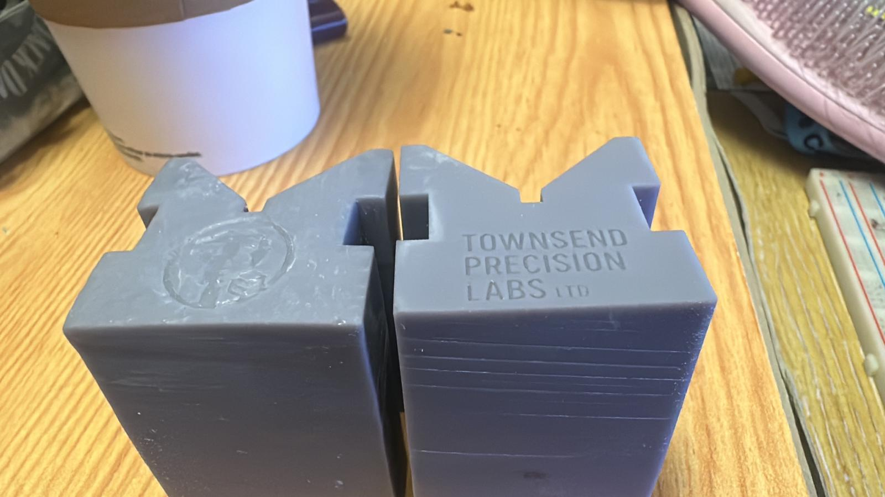
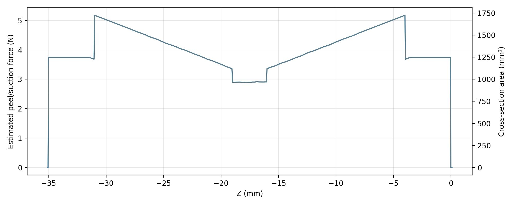

Vee Blocks, Resin Suction Forces and Logging
What I worked on
- First prototype of vee blocks
- A rough-and-ready resin peel / suction force estimator for MSLA prints (mainly to explore the idea of support generation that considers forces, not just geometry)
What’s the goal?
I’ve had issues getting a completely perpendicular face on the surface that faces the bed on my Saturn 3 Ultra.
- The opposing face is perfect and flat within 50 microns (measuring 24 points on a CMM)
- The vee itself measures 90.0018° — basically perfect
- But the bottom face shows scarring and issues with warping
This was using the auto support generation in Elegoo SatelLite.
Since then I ran a second trial where I rotated the part 20° in Rx and 7° in Ry, again with auto supports, to see whether orientation helps with the large cross‑sectional suction forces.
Because it’s solid, it’s hard to minimise suction area completely — a big chunk of the model is always going to be “doing work” each layer.
Unfortunately the second run warped badly and even had a slight layer shift. Past the layer shift the print came out perfect, which (to me) points to insufficient support earlier on.

Next steps
Auto supports can be great, but they aren’t as mature as the FDM world where support generation has had loads of time + open-source iteration.
For the next test I’m going to go manual supports, even if it’s a pain — and I’ll live with that while I think about something more permanent.
Suction forces (the side quest)
This started as a shower thought: simulate the suction forces a printer experiences across layers/regions, with the long-term goal of building an open-source support generator that considers layer forces, not just geometry.
I messaged Clawdbot to quickly put together something that could estimate suction forces for a given STL. I didn’t do a ton of research up front (so I didn’t exactly give it the perfect brief), but it still produced a decent “per-layer” force model.
I still need to:
- properly review the code
- understand the Stefan model end-to-end
- figure out how to incorporate the FEP’s behaviour (no vat tilting on my setup)

The output looks OK, but it needs to become something that actually helps support generation. Right now it mostly tells me what I already know (even though it’s useful to have it quantified).
This is something I want to keep working on for large-scale manufacturing reliability — but the immediate focus is still a perfect vee block I can sell.
Why I’m logging all this
I do a lot of random (sometimes useful) work. I want to get better at sharing what I learn — and keeping a central place I can point people to.
Either way: thanks for the read.